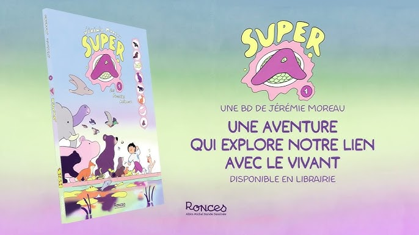

Super A T01
Jérémie Moreau, 2025
Bande-dessinée jeunesse, Super A raconte l'histoire de deux frère et soeur, Aldo et Babette, encore bébé. Leur père, dessinateur, passe son temps à dormir et leur mère, anthropologue, fait le tour du monde. Un peu livré à eux-même, Aldo et Babette s'occupent comme ils peuvent. Un jour, alors qu'ils sont dehors en train de jouer, le bébé tombe dans la piscine qui ressemble plus à une mare qu'autre chose. Leur vie va être boulversé à tout jamais, car de l'eau surgit Luca 1er qui leur rend les compétences animales qu'ils ont oublié dans le but qu'ils deviennent des Super-Archéens.
Le gros plus de cette bande-dessinée c'est les couleurs. Des couleurs un peu pastel, un peu fluo qui donnent un vrai plus à la direction artistique de l'oeuvre. Je suis vraiment tombée amoureuse des couleurs et des dessins qui nous plongent directement dans l'univers de l'auteur. L'histoire aussi est tout mignonne et on est déjà plongé dans les aventures d'Aldo. J'ai qu'une envie c'est d'avoir la suite.
Retour à l'accueil